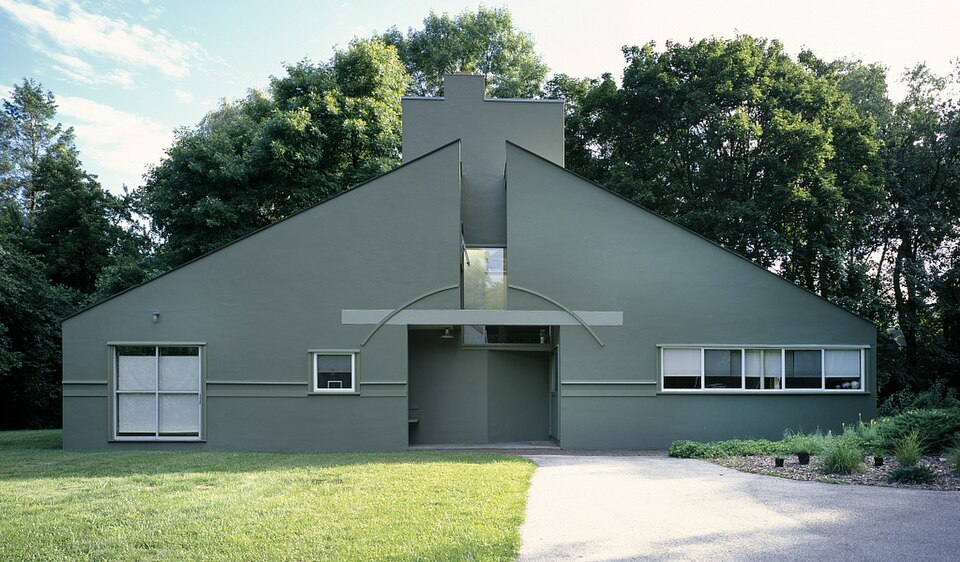
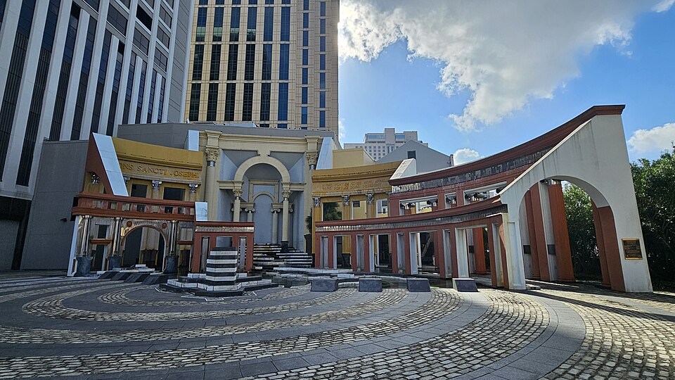
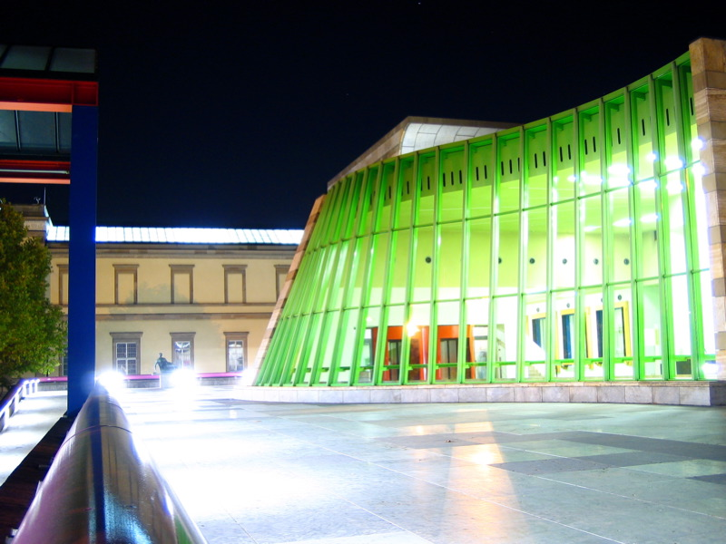
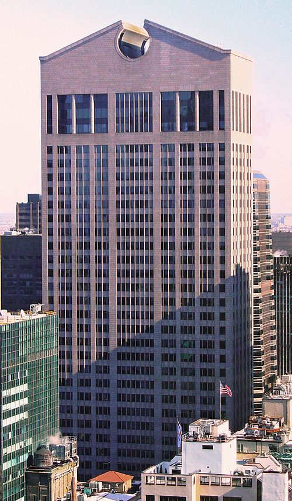
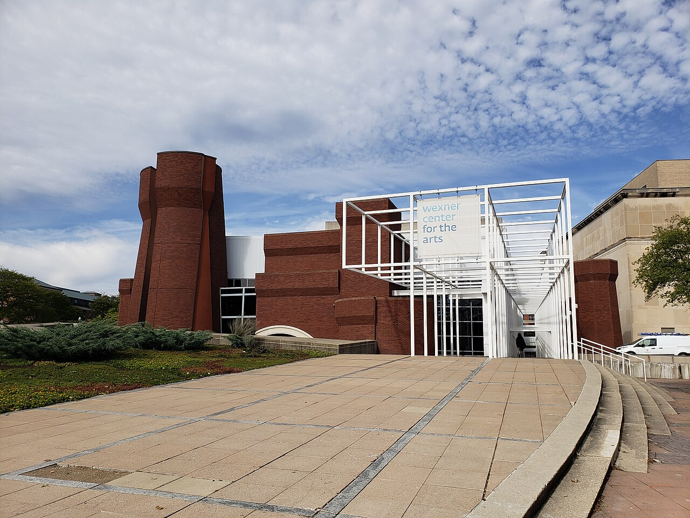
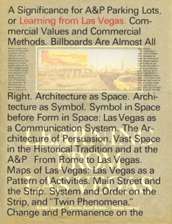

Architecture
Vanna Venturi House — Robert Venturi, 1964, Chestnut Hill, PA

Piazza d'Italia — Charles Moore, 1978, New Orleans, LA

Portland Building — Michael Graves, 1982, Portland, OR

Neue Staatsgalerie — James Stirling, 1984, Stuttgart, Germany

AT&T Building (now 550 Madison Avenue) — Philip Johnson & John Burgee, 1984, New York

Team Disney Burbank — Michael Graves, 1986, Burbank, CA A corporate headquarters whose pediment is supported by seven oversized dwarves standing in for caryatids. Literalizes Disney's own mythology in a way that is charming or embarrassing depending on viewer. An extreme case of postmodernism's willingness to let architecture tell a joke at corporate scale.
Humana Building — Michael Graves, 1985, Louisville, KY Graves considered this his best building. More restrained than the Portland Building, with granite cladding, a monumental entry loggia, and a glazed observation deck cantilevered out over the street. It demonstrates that postmodern architecture could achieve dignity as well as wit.
Wexner Center for the Arts — Peter Eisenman, 1989, Columbus, OH

Piazza d'Italia — Detail Palette — The neon-lit columns and mirrored tile fountains at Moore's plaza deserve their own mention as a study in postmodern color and material. Few other buildings of the era gave themselves permission to be simultaneously classical, commercial, and theatrical in quite the same proportions.
Furniture — Memphis and Studio Alchymia
Proust Armchair — Alessandro Mendini for Studio Alchymia, 1978 A historical eighteenth-century Baroque armchair entirely overpainted by hand in tiny Pointillist dots borrowed from a Signac painting. Mendini's most important single object and perhaps the clearest demonstration of postmodern methodology: take an exhausted historical form, apply a second layer of quotation, and let the contradiction sit. Produced in limited quantities and still in production from Cappellini.
Carlton Bookcase — Ettore Sottsass for Memphis, 1981 The defining object of the first Memphis show. Particleboard covered in brightly patterned plastic laminate, assembled into a room-dividing totem that only incidentally functions as shelving. The form is often read as a figure, with outstretched arms and a head-like element at the top. It appeared in every photograph of the September 1981 Memphis exhibition and became the movement's flag.
Casablanca Sideboard — Ettore Sottsass for Memphis, 1981

First Chair — Michele De Lucchi for Memphis, 1983 A small chair with a painted metal disk for a back, two brightly colored spheres on the ends of its armrests, and a conical base. Reads as a toy more than as seating, which is the point. De Lucchi's work with Memphis was generally more ironic than Sottsass's own; the First Chair is perhaps the purest Memphis object in terms of its commitment to wit over comfort.
Super Lamp — Martine Bedin for Memphis, 1981 A small colored cylinder on wheels, with incandescent bulbs arrayed along a curved back. Designed to be wheeled around the floor like a toy, the lamp is a reproach to high-modernist lighting design, which had always treated lamps as either sculptures or service objects. Memphis insisted that a lamp could also be a pet.
Tahiti Lamp — Ettore Sottsass for Memphis, 1981 A desk lamp resembling a stylized flamingo or toucan, with a geometric laminate body and a colored light source at the beak. One of the most photographed individual Memphis objects because it is so obviously not "just a lamp."
Kandissi Sofa — Alessandro Mendini for Studio Alchymia, 1979 A sofa whose geometric surface decoration deliberately quotes Kandinsky's abstract paintings, overlaid on a conventional upholstered form. Another example of the Studio Alchymia / Memphis method of applying a quotation to an otherwise familiar object.
Valentine Typewriter — Ettore Sottsass for Olivetti, 1969 The hinge object between Sottsass's mid-century Olivetti work and his later Memphis practice. A bright red portable typewriter in a matching red plastic case, marketed as "an anti-machine for the non-office." An early break from modernist restraint, still produced within a mainstream corporate context.
Product Design — Alessi and Beyond
9091 Kettle — Richard Sapper for Alessi, 1983 A chrome kettle whose whistle plays two musical notes (E and B) tuned to blend rather than scream. Still modernist in its form but already smuggling wit back into the product design kit. The predecessor to Graves's more famous 9093.
9093 "Bird Kettle" — Michael Graves for Alessi, 1985 The best-selling kettle in the world. A polished stainless steel kettle with a cobalt-blue handle and a little red plastic bird that sits on the spout and whistles when the water boils. The defining consumer object of postmodern design: functional, affordable by kitchenware standards, mass-produced, and openly charming.
Juicy Salif Lemon Squeezer — Philippe Starck for Alessi, 1990 A chrome arachnid on three legs. Widely acknowledged as a bad lemon squeezer (it drips, and citric acid pits the chrome over time) and widely adored as a sculptural object. The late-postmodern statement that a useful object could be subordinated to formal expression without apology. Alessi has reissued it in gold-plated editions.
Anna G. Corkscrew — Alessandro Mendini for Alessi, 1994 A corkscrew in the form of a smiling woman whose arms lift into the air as the screw is driven into the cork. One of the best-selling corkscrews of the 1990s and a late demonstration of Mendini's insistence that objects could be cheerful characters rather than austere tools.
Dr. Skud Fly Swatter — Philippe Starck for Alessi, 1998 A plastic fly swatter in which the flat blade carries the raised image of a stylized face. Produced in a run of several million units, this is probably the most widely distributed object of architectural-school postmodernism on the planet.
Michael Graves for Target housewares line — 1999–2013 A late, unexpected turn in which Graves designed over 2,000 everyday household objects (toasters, spatulas, egg timers, alarm clocks) for Target's mass-market audience at prices Memphis and Alessi had never attempted. In some ways the most fully realized democratization of postmodern wit: a single designer's cheerful, slightly historicizing sensibility applied to thousands of objects and sold to millions of consumers.
Graphic Design — Typographic Experiments
Typographische Monatsblätter covers — Wolfgang Weingart, 1972 onward, Basel The journal covers in which Weingart worked out his break from the Swiss International Style in public. Widened letter-spacing, type set at angles, layered imagery in heavy inks, and disrupted grids: each cover is a public experiment, and taken together they are perhaps the most rigorous body of typographic research of the postmodern era.
"Does It Make Sense?" — Design Quarterly 133 — April Greiman, 1986 A single fold-out poster issued as an entire issue of Design Quarterly, produced start-to-finish on an early Macintosh II with MacPaint and MacDraw. Features a life-size nude self-portrait of Greiman overlaid with bitmap text and layered imagery. The processing time on the hardware of the era was extraordinary; the finished piece demonstrated, to a generation of skeptical designers, that the new computer tools could produce work of real ambition.
The Face magazine, Brody years — Neville Brody, art director, 1981–1986, London The most influential magazine design of the decade. Brody designed every issue of The Face as a typographic experiment, drawing custom typefaces (the Industria and Insignia fonts later released through FontShop), and using the cover as a space for graphic invention rather than brand consistency. His work codified for the British style-magazine generation the idea that a magazine's visual identity could change issue to issue.
Factory Records sleeves — Peter Saville, 1979–1992, Manchester Album sleeves for Joy Division, New Order, and the broader Factory Records roster. Saville's work sits on the edge of postmodernism — it is generally more austere and modernist in appearance than Brody's — but it constantly quotes historical sources (Jan Tschichold's typography, Futurist design, medieval manuscripts) with a postmodern sensibility of layering and contradiction.
Cranbrook Graduate Design publications — Katherine McCoy and students, 1980s, Cranbrook, MI The posters, catalogs, and graduate theses produced by Cranbrook's graphic design program through the decade. Collectively the most theoretically ambitious body of postmodern graphic design in America. The Cranbrook approach — reading Derrida and Barthes alongside type specimens, layering multiple voices on a single page, designing publications that actively resist single readings — shaped a generation of American designers.
Emigre magazine — Rudy VanderLans & Zuzana Licko, 1984–2005, Berkeley A quarterly magazine founded by two California designers that became the primary American journal of postmodern graphic design. Licko drew bitmap fonts (Emperor, Oakland, Emigre) designed for low-resolution digital output rather than fighting the new medium, and the magazine itself was a laboratory for layered, experimental layout. When Neville Brody's work went mainstream in the UK, Emigre played the equivalent role in the US.
Ray Gun magazine — David Carson, art director, 1992–1995 The mainstream apotheosis of postmodern graphic design. A music magazine in which Carson treated legibility as one variable among many, famously setting a boring interview in Zapf Dingbats, and published layouts so dense and fractured that the readings of a single page could multiply indefinitely. Carson had no formal graphic design training, which either freed him or made him a charlatan depending on whom you ask.
Theory — Texts and Diagrams
Complexity and Contradiction in Architecture — Robert Venturi, 1966, MoMA Press The foundational postmodern text. A careful, historically literate argument against the purity of modernist architecture, illustrated with photographs of buildings from Michelangelo to Lutyens. The book's most famous single line — "Less is a bore" — was intended as a joke and became a manifesto.
Learning from Las Vegas — Robert Venturi, Denise Scott Brown, Steven Izenour, 1972 (revised 1977), MIT Press

The Language of Post-Modern Architecture — Charles Jencks, 1977 The book that first used the term "post-modern architecture" as a proper movement label and popularized the claim that "modern architecture died in St. Louis, Missouri on July 15, 1972 at 3:32 pm" with the demolition of the Pruitt-Igoe public housing project. Jencks's taxonomies are sometimes dubious but his willingness to name the movement and draw its genealogy made him the decade's most influential architectural critic.
Memphis: Research, Experiences, Results, Failures, and Successes of New Design — Barbara Radice, 1984 The authorized history of the Memphis Group, written by Sottsass's partner and collaborator. A richly illustrated document that both mythologizes the movement and preserves its actual working methods. The primary source for anyone trying to understand Memphis from the inside.
Design Since 1945 — Peter Dormer, 1993 Not strictly a postmodern manifesto but the book that first offered a confident historical narrative of postmodern product design as a distinct moment rather than an aberration. Dormer's reading of Alessi, Memphis, and the postmodern consumer object shaped how the movement was taught in design programs from the mid-1990s onward.